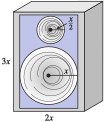
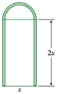
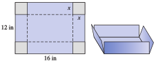
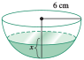

where \(a_0\text{,}\)\(a_1\text{,}\)\(a_2\text{,}\)\(\ldots\text{,}\)\(a_n\) are constants and \(a_n \ne 0\text{.}\) The coefficient \(a_n\) of the highest power term is called the lead coefficient.
Each of the polynomials above is written in descending powers, which means that the highest-degree term comes first, and the degrees of the terms decrease from largest to smallest. Sometimes it is useful to write a polynomial in ascending powers, so that the degrees of the terms increase. For example, the polynomial \(f(x)\) above would be written as
When we multiply two or more polynomials together, we get another polynomial of higher degree. (See Algebra Skills Refresher A.7 for the definition of degree.)
Example7.2.
Compute the products.
\(\displaystyle (x + 2)(5x^3 - 3x^2 + 4)\)
\(\displaystyle (x - 3)(x + 2)(x - 4)\)
Solution.
Checkpoint7.3.Practice 1.
Multiply \((y + 2)(y^2 - 2y + 3)=\) .
Answer.
\(y^{3}-y+6\)
Solution.
\(y^3 - y + 6\)
Checkpoint7.4.QuickCheck 2.
What is the linear term of the product \((x-3)(x+5)\) ?
\(\displaystyle x^2\)
\(\displaystyle 2x-15\)
\(\displaystyle -15\)
\(\displaystyle 2x\)
Answer.
\(\text{Choice 4}\)
Solution.
\(2x\) is the linear term of \(x^2+2x-15\text{.}\)
In Example7.2a, we multiplied a polynomial of degree 1 by a polynomial of degree 3, and the product was a polynomial of degree 4. In Example7.2b, the product of three first degree polynomials is a third-degree polynomial.
Degree of a Product.
The degree of a product of nonzero polynomials is the sum of the degrees of the factors. That is,
If \(P(x)\) has degree \(m\) and \(Q(x)\) has degree \(n\text{,}\) then their product \(P(x)Q(x)\) has degree \(n + m\text{.}\)
Example7.5.
Let \(P(x) = 5x^4 - 2x^3 + 6x^2 - x + 2\text{,}\) and \(Q(x) = 3x^3 - 4x^2 + 5x + 3\text{.}\)
What is the degree of their product? What is the coefficient of the lead term?
Find the coefficient of the \(x^3\)-term of the product.
Solution.
The degree of \(P\) is \(4\text{,}\) and the degree of \(Q\) is \(3\text{,}\) so the degree of their product is \(4 + 3 = 7\text{.}\) The only degree \(7\) term of the product is \((5x^4)(3x^3) = 15x^7\text{,}\) which has coefficient \(15\text{.}\)
In the product, each term of \(P(x)\) is multiplied by each term of \(Q(x)\text{.}\) We get degree \(3\) terms by multiplying together terms of degree \(0\) and \(3\text{,}\) or \(1\) and \(2\text{.}\) For these polynomials, the possible combinations are:
\(P(x)\)
\(Q(x)\)
Product
\(2\)
\(3x^3\)
\(6x^3\)
\(-2x^3\)
\(3\)
\(-6x^3\)
\(-x\)
\(-4x^2\)
\(4x^3\)
\(6x^2\)
\(5x\)
\(30x^3\)
The sum of the third-degree terms of the product is \(34x^3\text{,}\) with coefficient \(34\text{.}\)
Checkpoint7.6.Practice 2.
Find the coefficient of the fourth-degree term of the product of \(f(x) = 2x^6 + 2x^4 - x^3 + 5x^2 + 1\) and \(g(x) = x^5 - 3x^4 + 2x^3 + x^2 - 4x - 2\text{.}\)
Answer:
Answer.
\(2\)
Solution.
\(2\) is the coefficient of the \(x^4\) term in the product.
To compute the fourth-degree term in the product, we multiply a term of \(f(x)\) of degree 4, 3, 2, or 0 by a term of \(g(x)\) of degree 0, 1, 2, or 4 respectively. We add those four products of terms:
So the fourth-degree term in the product is \(2x^4\text{,}\) and the coefficient is \(2\text{.}\)
Checkpoint7.7.QuickCheck 3.
The degree of a product of polynomials is the same as
A) the product of the degrees of the factors.
B) the number of terms in the product.
C) the sum of the degrees of the factors.
D) the sum of the lead coefficients.
Answer.
\(\text{C) the ... the factors.}\)
Solution.
the sum of the degrees of the factors.
SubsectionSpecial Products
In the Algebra Skills Refresher SectionA.8, you can review the following special products involving quadratic expressions.
Special Products of Binomials.
\begin{align*}
\amp(a + b)^2 = (a + b) (a + b) = a^2 + 2ab + b^2\\
\amp(a - b)^2 = (a - b) (a - b) = a^2 - 2ab + b^2\\
\amp(a + b) (a - b)= a^2 -b^2
\end{align*}
There are also special products resulting in cubic polynomials. In the Homework problems, you will be asked to verify the following products.
When we recognize a polynomial as a sum or difference of two perfect cubes, we then identify the two cubed expressions and apply the formula.
Example7.11.
Factor each polynomial.
\(\displaystyle 8a^3 + b^3\)
\(\displaystyle 1 - 27h^6\)
Solution.
This polynomial is a sum of two cubes. The cubed expressions are \(2a\text{,}\) because \((2a)^3 = 8a^3\text{,}\) and \(b\text{.}\) Use formula1 as a pattern, replacing \(x\) with \(\alert{2a}\text{,}\) and \(y\) with \(\blert{b}\text{.}\)
This polynomial is a difference of two cubes. The cubed expressions are \(1\text{,}\) because \(1^3 = 1\text{,}\) and \(3h^2\text{,}\) because \((3h^2)^3 = 27h^6\text{.}\) Use formula2 above as a pattern, replacing \(x\) by \(\alert{1}\text{,}\) and \(y\) by \(\blert{3h^2}\text{:}\)
An empty reflecting pool is \(3\) feet deep. It is \(8\) feet longer than it is wide, as illustrated above.
Write a polynomial function \(S(x)\) that gives the surface area of the empty pool.
\(S(x)=\)
Write a polynomial function \(V(x)\) for the volume of the pool.
\(V(x)=\)
Answer1.
\(x^{2}+20x+48\)
Answer2.
\(3x^{2}+24x\)
Solution.
We add the area of the bottom to the areas of each of the sides of the pool: \(S(x) = x^2 + 20x + 48\)
We multiply depth, length, and width: \(V(x) = 3x^2 + 24x\)
Checkpoint7.17.Pause and Reflect.
Explain how to find the surface area of a solid figure such as a box or a cylinder.
Cubic polynomials are often used in economics to model cost functions. The cost of producing \(x\) items is an increasing function of \(x\text{,}\) but its rate of increase is usually not constant.
Example7.18.
Pegasus Printing, Ltd. is launching a new magazine. The cost of printing \(x\) thousand copies is given by
What does the concavity of the graph tell you about the cost function?
Solution.
Fixed costs are given by \(C(0) = 250\text{,}\) or $\(250\text{.}\) The fixed costs include expenses like utility bills that must be paid even if no magazines are produced.
The graph is shown in figure (a). It is increasing from a vertical intercept of \(250\text{.}\) The graph is concave down for \(x \lt 8\) approximately, and concave up for \(x\gt 8\text{.}\)
We will solve the equation graphically, as shown in figure (b). Graph \(y = 1200\) along with the cost function, and use the intersect command to find the intersection point of the graphs, \((15.319, 1200)\text{.}\)\(C(x) = 1200\) when \(x\) is about \(15.319\text{,}\) so \(15,319\) copies can be printed for $\(1200\text{.}\)
Although the cost is always increasing, it increases very slowly from about \(x = 5\) to about \(x = 11\text{.}\) The flattening of the graph in this interval is a result of economy of scale: By buying supplies in bulk and using time efficiently, the cost per magazine can be minimized. However, if the production level is too large, costs begin to rise rapidly again.
In Example7.18c, we solved a cubic equation graphically. There is a cubic formula, analogous to the quadratic formula, that allows us to solve cubic equations algebraically, but it is complicated and not often used. See the Projects for Chapter 7 if you would like to know more about the cubic formula.
Checkpoint7.19.QuickCheck 5.
How do we solve cubic equations in this class?
By factoring.
By taking cube roots.
By using the quadratic formula.
By graphing.
Answer.
\(\text{By graphing.}\)
Solution.
By graphing.
Cubic polynomials are also used to model smooth curves connecting given points. Such a curve is called a cubic spline.
Checkpoint7.20.Practice 6.
Leon is flying his plane to Au Gres, Michigan. He maintains a constant altitude until he passes over a marker just outside the neighboring town of Omer, when he begins his descent for landing. During the descent, his altitude, in feet, is given by
For Problems 1922, verify the following products discussed in the text.
19.
\((x + y)^3 = x^3 + 3x^2 y + 3xy^2 + y^3\)
20.
\((x - y)^3 = x^3 - 3x^2 y + 3xy^2 - y^3\)
21.
\((x + y)(x^2 - xy + y^2) = x^3 + y^3\)
22.
\((x - y)(x^2 + xy + y^2) = x^3 - y^3\)
23.
As if you were addressing a classmate, explain how to remember the formula for expanding \((x + y)^3\text{.}\) In particular, mention the exponents on each term and the numerical coefficients.
Explain how to remember the formula for expanding \((x - y)^3\text{,}\) assuming your listener already knows the formula for \((x + y)^3\text{.}\)
24.
As if you were addressing a classmate, explain how to remember the formula for factoring a sum of two cubes. Pay particular attention to the placement of the variables and the signs of the terms.
Explain how to remember the formula for factoring a difference of two cubes, assuming your listener already knows how to factor a sum of two cubes.
Exercise Group.
For Problems 2528, use the formulas for the cube of a binomial to expand the products.
25.
\((1 + 2z)^3\)
26.
\((1 - x^2)^3\)
27.
\((1 -5\sqrt{t})^3\)
26.
\(\left(1 - \dfrac{3}{a}\right)^3\)
Exercise Group.
For Problems 2934, write each product as a polynomial and simplify.
29.
\((x - 1) (x^2 + x + 1)\)
30.
\((x +2) (x^2 -2 x + 4)\)
31.
\((2x + 1)(4x^2 - 2x + 1)\)
32.
\((3x - 1)(9x^2 + 3x + 1)\)
33.
\((3a - 2b)(9a^2 + 6ab + 4b^2)\)
34.
\((2a + 3b)(4a^2 - 6ab + 9b^2)\)
Exercise Group.
For Problems 3546, factor completely.
35.
\(x^3 + 27\)
36.
\(y^3 -1\)
37.
\(a^3 -8 b^3\)
38.
\(27a^3 +b^3\)
39.
\(x^3y^6 -1\)
40.
\(8 + x^{12}y^3\)
41.
\(27a^3 + 64b^3\)
42.
\(8a^3 - 125b^3\)
43.
\(125a^3b^3 - 1\)
44.
\(64a^3b^3 + 1\)
45.
\(64t^9 + w^6\)
46.
\(w^{15} - 125t^9\)
47.
Write a polynomial function, \(A(x)\text{,}\) that gives the area of the front face of the speaker frame (the region in color) in the figure.
If \(x=8\) inches, find the area of the front face of the frame.

48.
A Norman window is shaped like a rectangle whose length is twice its width, with a semicircle at the top (see the figure). Write a polynomial, \(A(x)\text{,}\) that gives its area.
If \(x=3\) feet, find the area of the front face of the frame.

49.
A grain silo is built in the shape of a cylinder with a hemisphere on top (see the figure). Write an expression for the volume of the silo in terms of the radius and height of the cylindrical portion of the silo.
If the total height of the silo is five times its radius, write a polynomial function \(V(r )\) in one variable for its volume.
50.
A cold medication capsule is shaped like a cylinder with a hemispherical cap on each end (see the figure). Write an expression for the volume of the capsule in terms of the radius and length of the cylindrical portion.
If the radius of the capsule is one-fourth of its overall length, write a polynomial function \(V(r )\) in one variable for its volume.
51.
Jack invests $\(500\) in an account bearing interest rate \(r\text{,}\) compounded annually. This means that each year his account balance is increased by a factor of \(1 + r\text{.}\)
Write expressions for the amount of money in Jacks account after \(2\) years, after \(3\) years, and after \(4\) years.
Expand as polynomials the expressions you found in part (a).
How much money will be in Jacks account at the end of \(2\) years, \(3\) years, and \(4\) years if the interest rate is \(8\%\text{?}\)
52.
A small company borrows $800 for start-up costs and agrees to repay the loan at interest rate \(r\text{,}\) compounded annually. This means that each year the debt is increased by a factor of \(1 + r\text{.}\)
Write expressions for the amount of money the company will owe if it repays the loan after \(2\) years, after \(3\) years, or after \(4\) years.
Expand as polynomials the expressions you found in part (a).
How much money will the company owe after \(2\) years, after \(3\) years, or after \(4\) years at an interest rate of \(12\%\text{?}\)
53.
A paper company plans to make boxes without tops from sheets of cardboard \(12\) inches wide and \(16\) inches long. The company will cut out four squares of side \(x\) inches from the corners of the sheet and fold up the edges as shown in the figure.

Write expressions in terms of \(x\) for the length, width, and height of the resulting box.
Write a formula for the volume, \(V\text{,}\) of the box as a function of \(x\text{.}\)
What is the domain of the function \(V\text{?}\) (What are the largest and smallest reasonable values for \(x\text{?}\))
Make a table of values for \(V(x) \) on its domain.
Graph your function \(V\) in a suitable window.
Use your graph to find the value of \(x\) that will yield a box with maximum possible volume. What is the maximum possible volume?
54.
The paper company also plans to make boxes with tops from \(12\)-inch by \(16\)-inch sheets of cardboard by cutting out the shaded areas shown in the figure and folding along the dotted lines.
Write expressions in terms of \(x\) for the length, width, and height of the resulting box.
Write a formula for the volume, \(V\text{,}\) of the box as a function of \(x\text{.}\)
What is the domain of the function \(V\text{?}\) (What are the largest and smallest reasonable values for \(x\text{?}\))
Make a table of values for \(V(x) \) on its domain.
Graph your function \(V\) in a suitable window.
Use your graph to find the value of \(x\) that will yield a box with maximum possible volume. What is the maximum possible volume?
Exercise Group.
Use your graphing utility to help you answer the questions in Problems 5562. Then verify your answers algebraically.
55.
A doctor who is treating a heart patient wants to prescribe medication to lower the patients blood pressure. The bodys reaction to this medication is a function of the dose administered. If the patient takes \(x\) milliliters of the medication, his blood pressure should decrease by \(R = f (x)\) points, where
Find a suitable domain for the function and explain why you chose this domain.
Graph the function \(f\) on its domain.
How much should the patients blood pressure drop if he takes \(2\) milliliters of medication?
What is the maximum drop in blood pressure that can be achieved with this medication?
There may be risks associated with a large change in blood pressure. How many milliliters of the medication should be administered to produce half the maximum possible drop in blood pressure?
56.
A soup bowl has the shape of a hemisphere of radius \(6\) centimeters. The volume of the soup in the bowl, \(V = f (x)\text{,}\) is a function of the depth, \(x\text{,}\) of the soup.

What is the domain of \(f\text{?}\) Why?
The function \(f\) is given by
\begin{equation*}
f (x) = 6 \pi x^2 -\frac{\pi}{3}x^3
\end{equation*}
Graph the function on its domain.
What is the volume of the soup if it is \(3\) centimeters deep?
What is the maximum volume of soup that the bowl can hold?
Find the depth of the soup (to within \(2\) decimal places of accuracy) when the bowl is filled to half its capacity.
57.
The population, \(P(t) \text{,}\) of Cyberville has been growing according to the formula
where \(x\) is the number of students, in hundreds. (Source: Creedy, Johnson, and Valenzuela, 2002)
Graph the function in a suitable window for up to \(3500\) students.
Describe the concavity of the graph. For what value of \(x\) is the cost growing at the slowest rate?
Approximately how many students can be educated for $\(350,000\text{?}\)
60.
It has been proposed that certain cubic functions model the response of wheat and barley to nitrogen fertilizer. These functions exhibit a "plateau" that fits observations better than the standard quadratic model. (See Problem36 of Section6.6.) In trials in Denmark, the yield per acre was a function of the amount of nitrogen applied. A typical response function is
where \(x\) is the amount of fertilizer, in kilograms per acre.(Source: Beattie, Mortensen, and Knudsen, 2005)
Graph the function on the domain \([0, 400]\text{.}\)
Describe the concavity of the graph. In reality, the yield does not increase after reaching its plateau. Give a suitable domain for the model in this application.
Estimate the maximum yield attainable and the optimum application of fertilizer.
61.
During an earthquake, Nordhoff Street split in two, and one section shifted up several centimeters. Engineers created a ramp from the lower section to the upper section. In the coordinate system shown in the figure below, the ramp is part of the graph of
\begin{equation*}
y = f (x) = -0.00004x^3 - 0.006x^2 + 20
\end{equation*}
By how much did the upper section of the street shift during the earthquake?
What is the horizontal distance from the bottom of the ramp to the raised part of the street?
62.
The off-ramp from a highway connects to a parallel one-way road. The accompanying figure shows the highway, the off-ramp, and the road. The road lies on the \(x\)-axis, and the off-ramp begins at a point on the \(y\)-axis. The offramp is part of the graph of the polynomial
\begin{equation*}
y = f (x) = 0.00006x^3 - 0.009x^2 + 30
\end{equation*}
How far east of the exit does the off-ramp meet the one-way road?
How far apart are the highway and the road?
63.
The number of minutes of daylight per day in Chicago is approximated by the polynomial
where \(t\) is the number of days since the summer solstice. The approximation is valid for \(-74 \lt t \lt 74\text{.}\) (A negative value of \(t\) corresponds to a number of days before the summer solstice.)
Use a table of values with increments of \(10\) days to estimate the range of the function on its domain.
Graph the polynomial on its domain.
How many minutes of daylight are there on the summer solstice?
How much daylight is there two weeks before the solstice?
When are the days more than \(14\) hours long?
When are the days less than \(13\) hours long?
64.
The water level (in feet) at a harbor is approximated by the polynomial
where \(t\) is the number of hours since the high tide. The approximation is valid for \(-4 \le t \le 4\text{.}\) (A negative value of \(t\) corresponds to a number of hours before the high tide.)
Use a table of values to estimate the range of the function on its domain.
Graph the polynomial on its domain.
What is the water level at high tide?
What is the water level \(3\) hours before high tide?